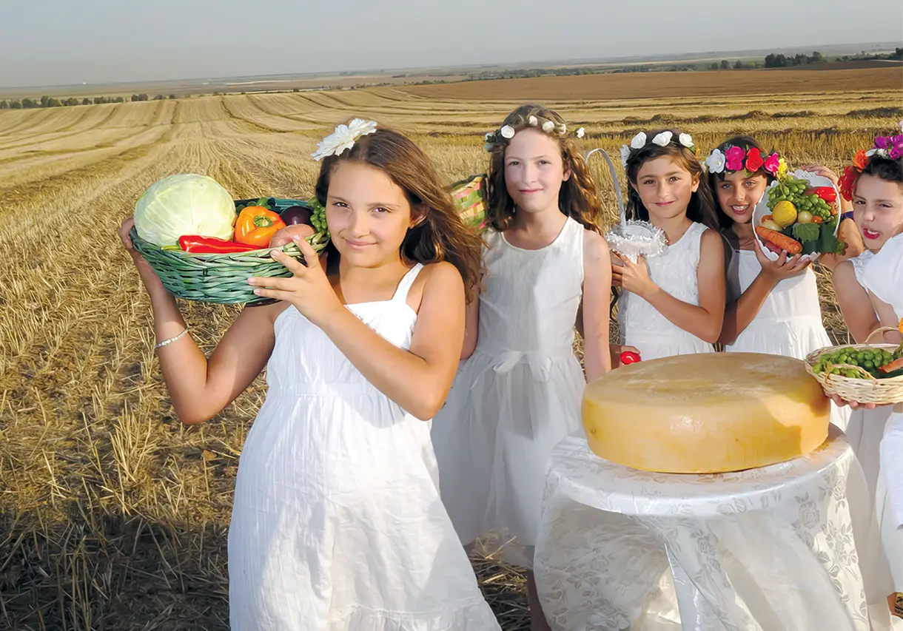

Lag Baomer

Lag Baomer es una de esas fechas únicas dentro del calendario judío que logran equilibrar profundidad espiritual con alegría desbordante. Se celebra el día 33 del Omer, el conteo diario entre Pesaj y Shavuot, que tradicionalmente representa un período de introspección y duelo. Pero este día específico interrumpe la solemnidad con una energía luminosa y festiva, recordándonos que el alma judía siempre encuentra razones para elevarse incluso en medio de la dificultad.En su origen, Lag Baomer marca el fallecimiento de Rabí Shimón Bar Yojai, un sabio cabalista que reveló secretos místicos de la Torá y cuyo deseo fue que su día de partida sea conmemorado con alegría. Por eso, hasta el día de hoy, en Israel y en comunidades de todo el mundo, se encienden grandes fogatas que simbolizan la luz de su sabiduría, se realizan salidas al aire libre, juegos, danzas, estudio y conexión con la identidad judía de manera profunda y vivencial.En Aieka, tomamos ese espíritu y lo convertimos en una experiencia inolvidable para nuestros jóvenes. Organizamos actividades que van desde caminatas y competencias recreativas hasta círculos de reflexión y momentos de espiritualidad activa. Las fogatas no solo iluminan la noche, sino que también representan la chispa interior de cada participante: esa llama que se enciende cuando entendemos que el judaísmo no es solo historia, sino presente vivo.Juegos de equipo, desafíos al aire libre, comidas compartidas y espacios para celebrar nuestra identidad nos permiten descubrir que el judaísmo también se vive con alegría, conexión y movimiento. No importa la edad ni el nivel de conocimiento: Lag Baomer en Aieka es para todos, porque todos somos parte de esta gran familia que sigue transmitiendo luz generación tras generación.
Rosh Hashana
Rosh Hashaná, el inicio del calendario hebreo, es uno de los momentos más significativos y sagrados del año. No es simplemente una celebración ni una fiesta tradicional: es una invitación profunda a detenerse, a mirar hacia adentro, a revisar nuestras acciones, nuestras decisiones y, sobre todo, nuestras posibilidades. Es el día en que, según la tradición, D-os evalúa nuestras vidas y nos da la oportunidad de comenzar de nuevo. Pero más allá del juicio y la solemnidad, Rosh Hashaná es una oportunidad para reconectar con la vida misma, con el propósito que nos mueve y con los vínculos que queremos sanar o fortalecer. Es el momento de volver a escribir nuestra historia personal y colectiva, de dejar atrás lo que ya no nos construye y de sembrar con intención el año que empieza. En Aieka, transformamos esta festividad en una experiencia que va mucho más allá de lo ritual. Preparamos espacios para la introspección y el crecimiento, donde cada joven puede sentirse acompañado en su proceso. A través de talleres, dinámicas, clases participativas y actividades creativas, buscamos que cada uno pueda entender qué significa realmente comenzar un nuevo ciclo: no desde la presión, sino desde la oportunidad. Escuchamos juntos el sonido del shofar, ese llamado ancestral que sacude el alma y despierta la conciencia. Compartimos comidas típicas, como manzanas con miel, que simbolizan nuestro deseo de un año dulce. Nos reunimos en comunidad para compartir ideas, sentimientos, propósitos y proyectos. Y, sobre todo, nos apoyamos unos a otros para que este nuevo año no sea solo un número, sino una renovación real del espíritu y del compromiso con nuestra identidad judía. Rosh Hashaná nos enseña que cada comienzo trae consigo una semilla, y que esa semilla, si es cuidada con intención, puede florecer en caminos de crecimiento, compasión y sentido.
Shavuot
Shavuot es la festividad que conmemora la entrega de la Torá en el Monte Sinaí, el momento en el que el pueblo judío, como un solo corazón y una sola alma, recibió su identidad espiritual, su misión y su guía eterna. Pero más allá de la historia milenaria, Shavuot nos interpela cada año con una pregunta profunda: ¿Estamos hoy listos para recibir la Torá? ¿Qué significa, en pleno siglo XXI, abrirnos al mensaje de la Torá y hacerlo parte de nuestra vida? En Aieka, entendemos Shavuot como una oportunidad única de conectar con el legado, pero también de reinterpretarlo a la luz de nuestras experiencias y desafíos actuales. Esta festividad no se trata solo de recordar, sino de renovar. Renovar nuestro pacto con el conocimiento, con los valores y con el compromiso de vivir de forma íntegra y significativa. Por eso, celebramos Shavuot con propuestas educativas que despiertan el interés y el entusiasmo de los jóvenes. Creamos espacios de aprendizaje en los que no solo se enseña, sino que se dialoga, se debate, se comparte. Leemos los Diez Mandamientos, pero también nos preguntamos cómo se aplican hoy. Comemos comidas lácteas típicas, pero también exploramos su simbolismo. Escuchamos relatos, pero también creamos los nuestros. Shavuot es también un puente entre generaciones. Padres, hijos, educadores, líderes y estudiantes se encuentran para estudiar juntos, compartir perspectivas y fortalecer los vínculos. Porque la Torá no pertenece al pasado: es un regalo eterno que se actualiza en cada generación y en cada persona que la recibe con apertura y deseo de crecer. En un mundo donde la información abunda pero el sentido escasea, Shavuot nos recuerda que el conocimiento con valores, con profundidad y con propósito sigue siendo el pilar de nuestra existencia. Recibir la Torá hoy es aceptar el desafío de vivir con conciencia, con responsabilidad y con identidad.